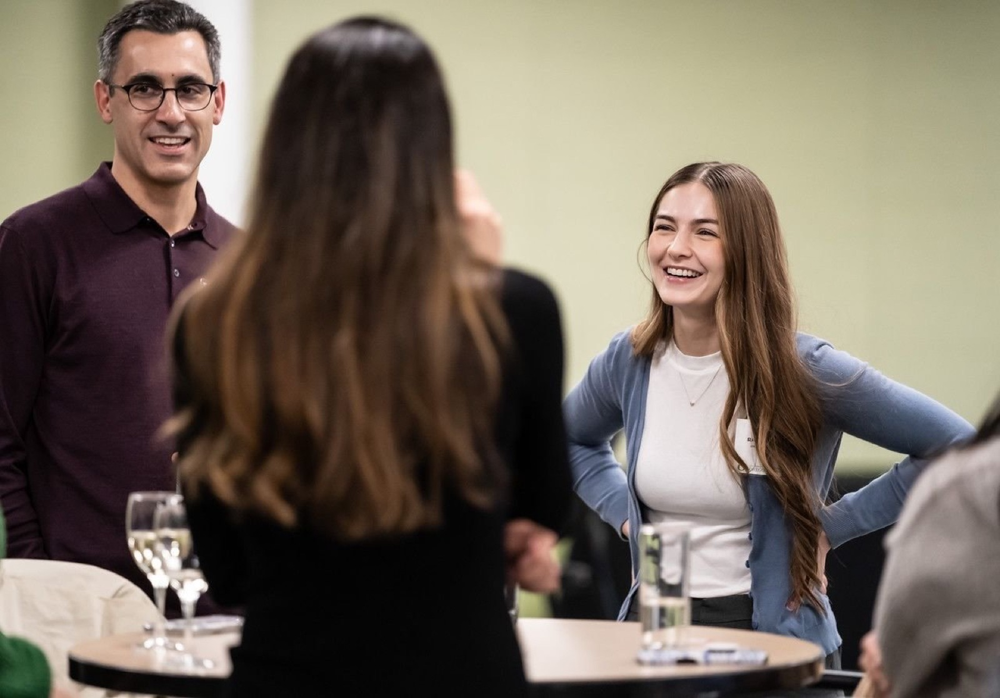

Rachel Marty
Digital Associate Account Executive
The Hoffman Agency
M.S. Strategic Communication (UO)
2026 Webby Awards Honoree
I’m a strategic communicator with a background in broadcast journalism. I started my career holding a camera for local news. Writing, shooting, and editing over 200 stories on daily deadlines taught me the most important lesson of my career: how to find the signal in the noise.
Whether I’m investigating the housing crisis in Northern California for a docuseries, conducting public health fieldwork in rural Ghana, or managing social campaigns for global tech brands at The Hoffman Agency, my approach is the same. I believe communication fails if it isn't anchored in empathy. People don't connect with policy documents or corporate jargon—they connect with human stories.
Today, armed with a Master's in Strategic Communication and a Webby Honor for spatial media design, I help organizations figure out what to say and how to say it. I take complicated problems and turn them into clear, actionable campaigns that people actually care about.